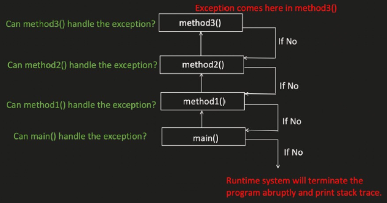
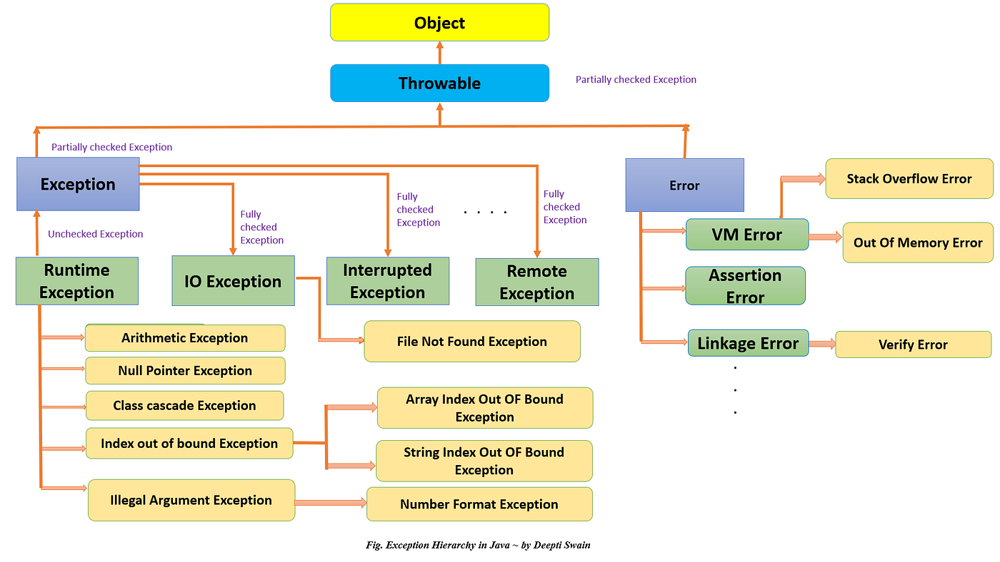

Exception Handling
What is exception?
Exception is an event that occurs during program execution and disrupts the normal flow of the program. When an exception occurs, Java creates an exception object and the program stops normal execution unless the exception is handled.

Java
public class Main {
public static void main(String[] args) {
int result = method1();
}
private static int method1() {
return method2();
}
private static int method2() {
return method3();
}
private static int method3() {
return 5/0;
}
}Output:
diagram
Exception in thread "main" java.lang.ArithmeticException: / by zero
at test.exception.Main.method3(Main.java:17)
at test.exception.Main.method2(Main.java:13)
at test.exception.Main.method1(Main.java:9)
at test.exception.Main.main(Main.java:5)Exception hierarchy

Un-checked/Runtime Exception
Occurs at runtime and compiler does not force to handle them.
ClassCastException
Java
public static void main(String[] args) {
Object val =0;
System.out.println((String) val);
}Output:
diagram
Exception in thread "main" java.lang.ClassCastException: class java.lang.Integer cannot be cast to class java.lang.String (java.lang.Integer and java.lang.String are in module java.base of loader 'bootstrap')
at test.exception.Main.main(Main.java:6)ArithmeticException
Java
public static void main(String[] args) {
int result = 10 / 0;
}Output:
diagram
Exception in thread "main" java.lang.ArithmeticException: / by zero
at test.exception.Main.main(Main.java:5)IndexOutOfBoundsException
Java
public static void main(String[] args) {
int[] arr = {1, 2, 3};
System.out.println(arr[10]);
}Output:
diagram
Exception in thread "main" java.lang.ArrayIndexOutOfBoundsException: Index 10 out of bounds for length 3
at test.exception.Main.main(Main.java:6)NullPointerException
Java
public static void main(String[] args) {
List<Integer> list = new ArrayList<>();
list.add(null);
System.out.println(list.get(0).equals(10));
}Output:
diagram
Exception in thread "main" java.lang.NullPointerException: Cannot invoke "java.lang.Integer.equals(Object)" because the return value of "java.util.List.get(int)" is null
at test.exception.Main.main(Main.java:10)IllegalArgumentException
(Note: NumberFormatException shown below is a subclass of IllegalArgumentException.)
Java
public static void main(String[] args) {
String val = "abc";
Integer x = Integer.valueOf(val);
}Output:
diagram
Exception in thread "main" java.lang.NumberFormatException: For input string: "abc"
at java.base/java.lang.NumberFormatException.forInputString(NumberFormatException.java:67)
at java.base/java.lang.Integer.parseInt(Integer.java:668)
at java.base/java.lang.Integer.valueOf(Integer.java:999)
at test.exception.Main.main(Main.java:9)Checked/Compile time exception
Compiler verifies it during the compile time of the code and if not handled properly, we will get CE.
Java
public class Main {
public static void main(String[] args) {
method1();
}
private static void method1() {
FileReader file = new FileReader("test.txt"); // ❌ CE: Unhandled exception: java.io.FileNotFoundException
}
}How to handle exceptions?
try-catch
tryblock specify the code which can throw exception.tryblock followed either bycatchorfinallyblock.catchblock is used to catch all the exceptions thrown intryblock.- Multiple
catchblocks can be used.
Java
public class Main {
public static void main(String[] args) {
try {
method1("dummy");
} catch (ClassNotFoundException | InterruptedException e) {
throw new RuntimeException(e);
}
}
private static void method1(String name) throws ClassNotFoundException, InterruptedException {
if(name.equals("dummy")) {
throw new ClassNotFoundException("Class not found for name: " + name);
} else if(name.equals("wait")) {
throw new InterruptedException("Thread was interrupted while waiting");
} else {
System.out.println("Name is valid: " + name);
}
}
}Below combinations are invalid -
Java
public static void main(String[] args) {
try {
method1("dummy");
} catch (ClassNotFoundException | InterruptedException e) {
throw new RuntimeException(e);
} catch (FileNotFoundException e){ // ❌ CE: Exception 'java.io.FileNotFoundException' is never thrown in the corresponding try block
System.out.println("File not found: " + e.getMessage());
}
}Java
public static void main(String[] args) {
try {
method1("dummy");
} catch (Exception e){
System.out.println("Caught exception: " + e.getMessage());
} catch (ClassNotFoundException | InterruptedException e) { // ❌ CE: Exception 'java.lang.InterruptedException' has already been caught
throw new RuntimeException(e);
}
}But this is valid:
Java
public static void main(String[] args) {
try {
method1("dummy");
} catch (ClassNotFoundException |
InterruptedException e) {
throw new RuntimeException(e);
} catch (Exception e) {
System.out.println("Caught exception: " + e.getMessage());
}
}try-catch-finally or try-finally
finallyblock is used aftercatchblock ortryblock.finallyblock will always get executed, even if wereturnfromtryorcatch.- At most, we can have only one
finallyblock. - Mostly used for closing the db connection objects or adding logs etc.
finallyblock will be skipped in below scenarios- JVM related issues like OOM, system shut down etc.
- Process is forcefully killed (
System.exit(0);)
Java
public static void main(String[] args) {
try {
method1("dummy");
} catch (ClassNotFoundException |
InterruptedException e) {
throw new RuntimeException(e);
} catch (Exception e) {
System.out.println("Caught exception: " + e.getMessage());
} finally {
System.out.println("This block always executes");
}
}or
Java
public static void main(String[] args) {
try {
method1("dummy");
} finally {
System.out.println("This block always executes");
}
}throw
- It is used to throw a new Exception or re-throw the exception.
- The exception is thrown immediately
- Execution stops unless it is caught
Java
public static void main(String[] args) throws ClassNotFoundException, InterruptedException {
try {
method1("dummy");
} catch (ClassNotFoundException |
InterruptedException e) {
throw new RuntimeException(e); // Wrapping checked exceptions in an unchecked exception
} catch (Exception e) {
System.out.println("Caught exception: " + e.getMessage());
} finally {
System.out.println("This block always executes");
}
}throws
- It is used in method declaration to indicate that the method might throw exceptions.
- The responsibility of handling the exception is passed to the caller
Java
class Test {
static void readFile() throws IOException {
FileReader file = new FileReader("test.txt");
}
public static void main(String[] args) throws IOException {
readFile();
}
}Custom/User-defined exceptions
Java
public class ApiException extends Exception {
private int statusCode;
public ApiException(String message, int statusCode) {
super(message);
this.statusCode = statusCode;
}
public int getStatusCode() {
return statusCode;
}
}Java
public class Main {
public static void main(String[] args) {
try {
method1("dummy");
} catch (ApiException e){
System.out.println("Caught ApiException: " + e.getMessage() + " with status code: " + e.getStatusCode());
}
finally {
System.out.println("This block always executes");
}
}
private static void method1(String name) throws ApiException {
throw new ApiException("API error occurred", 500);
}
}At last, Why do we handle exceptions?
- Prevent program crashes
- Maintain normal program flow
- Handle runtime errors gracefully
- Provide meaningful error messages to users
- Ensure proper resource management (files, DB connections, etc.)
- Improve application stability and reliability
- Help in debugging using stack traces and logs
- Allow recovery from unexpected situations
- Maintain data consistency in applications